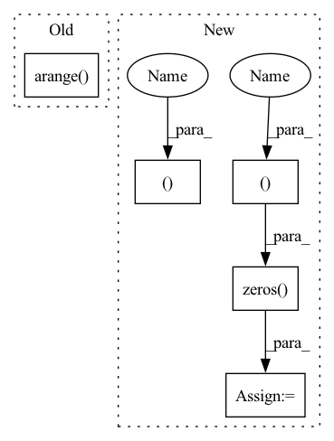

Pattern ID :25765
Before Change
from relative distances (with length 2*tokens-1) to absolute distance (length tokens)
query_index = torch.arange(tokens).unsqueeze(0) // [1, dim]
key_index = torch.arange( tokens) .unsqueeze(1) // [dim, 1]
relative_index = (key_index - query_index) + tokens - 1 // dim X dim (zero indexed)
flatten_index = rearrange(relative_index, "i j->(i j)") // flattenAfter Change
Input: [bs, heads, length, 2*length - 1]
Output: [bs, heads, length, length]
b , h, l, _, device, dtype = *q.shape, q.device, q.dtype
dd = {"device": device, "dtype": dtype}
col_pad = torch.zeros( (b , h, l, 1 ), **dd)
x = torch.cat((q, col_pad), dim=3) // zero pad 2l-1 to 2l
flat_x = rearrange(x, "b h l c -> b h (l c)")
flat_pad = torch.zeros((b, h, l - 1), **dd)
flat_x_padded = torch.cat((flat_x, flat_pad), dim=2)
final_x = flat_x_padded.reshape(b, h, l + 1, 2 * l - 1)
final_x = final_x[:, :, :l, (l - 1):]
return final_xIn pattern: SUPERPATTERN
Frequency: 3
Non-data size: 5
Instances Fragment ID: 78008998
Project Name: the-ai-summer/self-attention-cv
Commit Name: 400427e8b940a91d0baa90037b7bf2308c8bc9e9
Time: 2021-02-09
Author: black.adaloglou@gmail.com
File Name: self_attention_cv/pos_embeddings/relative_embeddings_1D.py
M Class Name: AnonimousClass
N Class Name: AnonimousClass
M Method Name: relative_to_absolute(1)
N Method Name: relative_to_absolute(3)
M Parent Class:
N Parent Class:
M File Name: self_attention_cv/pos_embeddings/relative_embeddings_1D.py
N File Name: self_attention_cv/pos_embeddings/relative_embeddings_1D.py
M Start Line: 6
M End Line: 17
N Start Line: 11
N End Line: 27
Before Change
from relative distances (with length 2*tokens-1) to absolute distance (length tokens)
query_index = torch.arange(tokens).unsqueeze(0) // [1, dim]
key_index = torch.arange( tokens) .unsqueeze(1) // [dim, 1]
relative_index = (key_index - query_index) + tokens - 1 // dim X dim (zero indexed)
flatten_index = rearrange(relative_index, "i j->(i j)") // flattenAfter Change
Input: [bs, heads, length, 2*length - 1]
Output: [bs, heads, length, length]
b, h, l, _, device, dtype = *q.shape, q.device, q.dtype
dd = {"device": device, "dtype": dtype}
col_pad = torch.zeros( (b, h, l, 1 ), **dd)
x = torch.cat((q, col_pad), dim=3) // zero pad 2l-1 to 2l
flat_x = rearrange(x, "b h l c -> b h (l c)")
flat_pad = torch.zeros((b, h, l - 1), **dd)
flat_x_padded = torch.cat((flat_x, flat_pad), dim=2)
final_x = flat_x_padded.reshape(b, h, l + 1, 2 * l - 1)
final_x = final_x[:, :, :l, (l - 1):]
return final_x Fragment ID: 78008999
Project Name: the-ai-summer/self-attention-cv
Commit Name: 400427e8b940a91d0baa90037b7bf2308c8bc9e9
Time: 2021-02-09
Author: black.adaloglou@gmail.com
File Name: self_attention_cv/pos_embeddings/relative_embeddings_1D.py
M Class Name: AnonimousClass
N Class Name: AnonimousClass
M Method Name: relative_to_absolute(1)
N Method Name: relative_to_absolute(3)
M Parent Class:
N Parent Class:
M File Name: self_attention_cv/pos_embeddings/relative_embeddings_1D.py
N File Name: self_attention_cv/pos_embeddings/relative_embeddings_1D.py
M Start Line: 6
M End Line: 17
N Start Line: 11
N End Line: 27
Before Change
// Emission score for next tag, only added if next timestep is valid (mask == 1)
// shape: (batch_size,)
score += emissions[i, ops.arange( batch_size) , tags[i]] * mask[i]
i += 1
// End transition scoreAfter Change
// Start transition score and first emission
// shape: (batch_size,)
score = self.start_transitions[tags[0]]
indices = ops.stack([ops.zeros( (batch_size) , arange(batch_size), tags[0]])
// score += emissions[0, arange(batch_size), tags[0]]
score += ops.gather_nd(emissions, indices.T)
i = Tensor(1, mindspore.int64)
while i < seq_length:
// for i in range(1, seq_length):
// Transition score to next tag, only added if next timestep is valid (mask == 1)
// shape: (batch_size,)
t_indices = ops.stack([tags[i - 1], tags[i]])
// score += self.transitions[tags[i - 1], tags[i]] * mask[i]
score += ops.gather_nd(self.transitions, t_indices.T) * mask[i]
// Emission score for next tag, only added if next timestep is valid (mask == 1)
// shape: (batch_size,)
e_indices = ops.stack([ops.tile(i, (batch_size Fragment ID: 78009008
Project Name: mindlab-ai/mindnlp
Commit Name: 60bfafb3c99d7dec61f86c61b4f9286b7e0f3726
Time: 2023-03-25
Author: lvyufeng@cqu.edu.cn
File Name: mindnlp/modules/crf.py
M Class Name: CRF
N Class Name: CRF
M Method Name: _compute_score(5)
N Method Name: _compute_score(5)
M Parent Class: nn.Cell
N Parent Class: nn.Cell
M File Name: mindnlp/modules/crf.py
N File Name: mindnlp/modules/crf.py
M Start Line: 153
M End Line: 170
N Start Line: 159
N End Line: 183
Before Change
if self.drop < 1:
self.emb = self.dropout(self.emb)
count = np.arange( x.shape[0]) + 1
self.c_t = torch.zeros_like(self.emb) // shape=(seq_len, batch_size, day_dim)
for i, att_timesteps in enumerate(count):
// 按时间步迭代，计算每个时间步的经attention的gru输出After Change
return out
def forward(self, x):
batch_size, time_steps, _ = x.size()
x = self.proj(x)
x = self.dropout(x)
out = torch.zeros( (batch_size, time_steps, self.hidden_dim ))
for cur_time in range(time_steps):
cur_x = x[:, : cur_time + 1, :]
out[:, cur_time, :] = self.retain_encoder(cur_x) Fragment ID: 78009018
Project Name: yhzhu99/covid-ehr-benchmarks
Commit Name: b3d4ba85ad8e8cfeb3e45e07e5fadfa3fd4a25fa
Time: 2022-06-25
Author: yhzhu99@gmail.com
File Name: app/models/backbones/retain.py
M Class Name: RETAIN
N Class Name: RETAIN
M Method Name: forward(2)
N Method Name: forward(2)
M Parent Class: nn.Module
N Parent Class: nn.Module
M File Name: app/models/backbones/retain.py
N File Name: app/models/backbones/retain.py
M Start Line: 64
M End Line: 83
N Start Line: 44
N End Line: 53